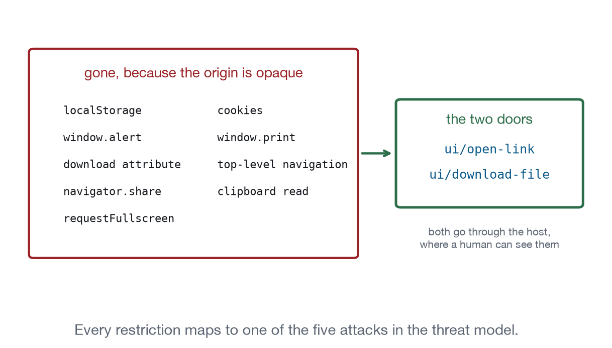

Chapter 4
The Sandbox and What It Costs You
An opaque origin, a content security policy your server declares and the host enforces, four permissions, and the surprising consequences of all of it.
The security model of MCP Apps is two sentences long. Views run in sandboxed iframes. All communication with the host is auditable JSON-RPC.
Everything else follows from those two sentences, including a set of consequences that will look like bugs the first time you meet them. This chapter is here early because those consequences constrain every capability in Parts II and III, and because half of the “not standardised” entries in this book are not oversights in the specification. They are the sandbox doing its job.
The threat model
The host is running code that arrived over the network from a server the user connected to, possibly on somebody else’s recommendation, and rendering it next to a conversation that may contain the user’s private data and next to a model that can take actions. The specification names five attacks: a malicious server delivering harmful HTML, a compromised view attempting to escape the sandbox, a view invoking tools it was not authorised to invoke, a view exfiltrating host data, and a view phishing the user inside a frame that looks like part of the host.
Note the fifth. The other four are technical and have technical answers. The fifth is a design problem, and the specification’s answer is that hosts should clearly indicate sandboxed UI boundaries. That is why prefersBorder exists on the resource metadata: a view can ask to be visibly separate from the host, and a well behaved view asks for it.
The opaque origin
The sandbox attribute grants allow-scripts and nothing that would let the frame reach the host. In particular it does not grant allow-same-origin, so the view’s document has an opaque origin. The consequences are worth stating plainly, because they explain a dozen entries later in the book:
No storage. localStorage, sessionStorage, IndexedDB and cookies either throw or are useless. This is why state.save and state.restore are gaps and why the Document Editor keeps its document on the server.
No postMessage targeting. There is no origin to name, so both sides use "*" and identify each other by object identity: the host compares event.source against its own iframe’s contentWindow. If you write a host, that comparison is your authentication.
No modals. allow-modals is not granted, so window.alert, confirm and prompt do nothing. Chapter 8 has a button that proves it. Everything in the dialog family is yours to build.
No downloads. allow-downloads is not granted, so an anchor with a download attribute is inert. This is precisely why ui/download-file exists.
No top-level navigation. The view cannot navigate the host away, which is why ui/open-link exists.
Module scripts need care. A module fetch from an opaque origin is a CORS request. If you are loading your view’s script from a static file host that does not send permissive headers, a classic script works where a module does not. The bridge in this repository is a classic script for that reason.
None of this is hostile. Every restriction maps to one of the five attacks, and the two escape hatches that exist, ui/open-link and ui/download-file, are exactly the two where a human decision can be inserted.

The content security policy
Your server declares which origins the view needs. The host constructs the CSP and enforces it. The rule is one way: a host may restrict further, and must not allow anything undeclared.
Illustrative, not run
"_meta": { "ui": {
"csp": {
"connectDomains": ["https://api.example.com"],
"resourceDomains": ["https://cdn.example.com"],
"frameDomains": [],
"baseUriDomains": []
},
"permissions": { "clipboardWrite": {} },
"prefersBorder": true
} }connectDomains becomes connect-src and governs fetch, XHR and WebSocket. resourceDomains becomes the source list for scripts, styles, images, fonts and media. frameDomains becomes frame-src, and omitting it means frame-src 'none'. baseUriDomains becomes base-uri, defaulting to 'self'.
Omit the whole block and you get the restrictive default: default-src 'none', self and inline for scripts and styles, self and data URIs for images and media, and no network at all. Every view in this book declares an empty CSP, because none of them load anything, and an empty declaration is a stronger statement than a missing one. A reviewer reading csp: {} knows the author thought about it.
Two placement details matter. The metadata may appear on the resources/list entry, on the resources/read content item, or both, and the content item wins. And the metadata belongs to the resource, not to the tool. A CSP block attached to a tool descriptor is silently ignored, which means the view renders with the restrictive default and the developer spends an afternoon wondering why fetch is blocked.
Permissions
Four, and only four, in the current specification: camera, microphone, geolocation, and clipboardWrite. Your server requests them in _meta.ui.permissions; the host may honour them by setting the frame’s allow attribute; and hostCapabilities.sandbox.permissions reports what was actually granted.
Notice what is not on that list. No fullscreen, which is why media.fullscreen goes through ui/request-display-mode instead of the Fullscreen API. No web share, which is why system.share is a gap. No clipboard read, which is why clipboard.read is a gap. No print. The permission set is deliberately small, and the specification’s advice is the right one: never assume a permission was granted, feature-detect and fall back.
Least privilege in practice
An application requests what it currently needs, not what it might need. This is worth taking seriously for a reason beyond principle: _meta.ui is the part of your server a host reviewer actually reads. A view that asks for camera access because a future feature might use it is a view that gets declined by a cautious host today.
Concretely: declare no CSP if you load nothing. Request no permissions if you need none. Prefer a resources/read through the host over a fetch to your own API, because the read is auditable and the fetch is a hole you asked to have opened. Use visibility: ["app"] on tools that exist to serve the view, so the model’s tool list stays short and a refresh button is not something the model can decide to press.
Tools your view provides are untrusted too
When a view registers tools, the trust direction reverses. The agent can now call code inside a sandboxed frame that a server delivered. The specification is direct about the consequences: descriptions may not fully capture side effects, names may collide with server tools, and results should be validated against declared schemas. It recommends per-app or per-server approval policies, clear attribution in the host’s UI so a user can see which app is calling, resource limits, and an audit trail.
For an application author the practical rule is smaller. Annotate honestly. readOnlyHint: true on a tool that mutates is the one lie in this system that a host will believe, and it is the lie that gets automatic approval. Chapter 18 registers four tools and marks exactly the two that change something.
A short security review of your own server
Six questions, in the order a cautious host reviewer would ask them. They take ten minutes and they are the difference between a server that gets approved and one that gets a request for changes.
Does the CSP declare anything? If your view loads nothing, say so with an empty block rather than omitting it. csp: {} reads as considered; a missing field reads as unexamined, even though they produce the same policy.
Is every declared origin actually used? A resourceDomains entry left over from a font you removed is a hole with no purpose, and it is the kind of thing a reviewer finds and you do not.
Are the permissions the minimum? Four exist. Most views need none. A view that requests camera for a feature that is not built yet gets declined today for a benefit it gets later.
Is _meta.ui on the resource? Not on the tool. A policy on a tool descriptor is ignored, and the view renders under the restrictive default with nobody noticing until a fetch fails.
Which tools can the model call? Anything not marked visibility: ["app"] is in the agent’s tool list and can be invoked by a model that misreads a description. Saves, deletes and anything with a side effect should be app-only unless you specifically want the model to be able to trigger them.
Are the annotations true? readOnlyHint: true is the one claim a host acts on automatically. Every tool you mark read-only should be one you would be comfortable having called without asking.
Conformance checks
- The frame carries
allow-scriptsand notallow-same-origin. - The CSP is constructed from
_meta.ui.csp, and undeclared origins are blocked. - With no
_meta.ui.csp, the restrictive default applies. _meta.uion theresources/readcontent item takes precedence over theresources/listentry.- Permissions granted are reported in
hostCapabilities.sandbox.permissions. prefersBorderis honoured, or the host’s own boundary is visible anyway.- Messages from the frame are matched by
event.sourcerather than by origin.
What to remember
The sandbox is why this book has fourteen gaps, and most of them are gaps on purpose. Before proposing a mechanism for one, it is worth asking which of the five attacks the mechanism reopens. Some of them have good answers. clipboard.read behind an explicit user gesture and a host-mediated permission is a reasonable proposal. Others do not: a view that could read the conversation would make the fifth attack considerably easier, and no amount of convenience is worth that.